Surreal Branding (2016-2019)
- Some of the print outputs that I've designed over the years as an Art Director for Surreal Education -
Overview
Surreal Education : These are the some of the samples for the print and outputs I'd design and created for various exhibition or events for the Surreal Education. I set the brand artistic look guideline for the overall outputs with simple and a minimalistic approach that aims to communicate the reader a clear message. The colors cerulean green was chosen as the base color that coupled with ivory white for best readibility and clarity.
My Role
In my role as Art Director, I design and maintained a consistent look across all the material that's produced within the brand, and made sure the prints quality and materials were presented with best quality.
Highlights
- Designed and created all prints and promotional materials for exhibitions/events.
- Maintained consistent look across all different format and materials.
- Established a visual language that is easily recognisable for our clients or audiences.
Art & Process
Following are the samples of the works.

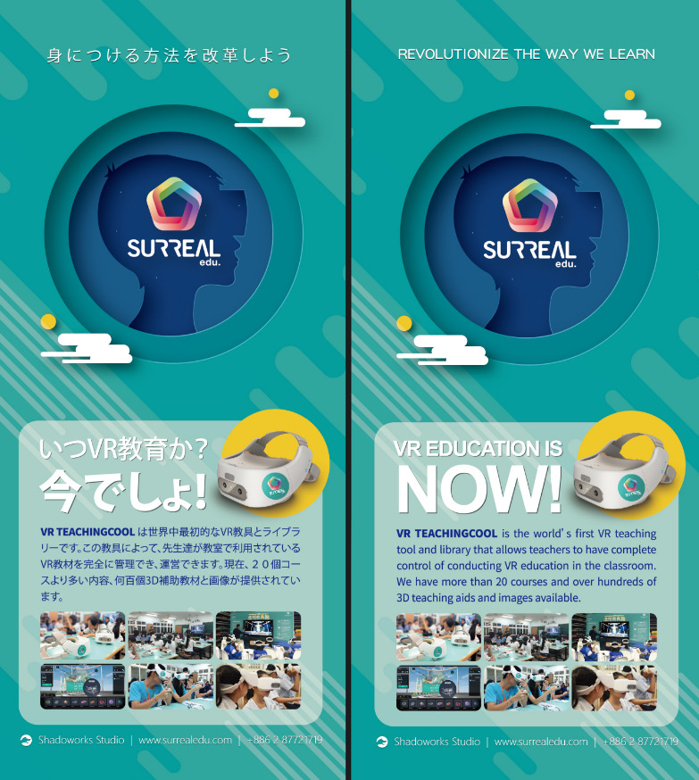
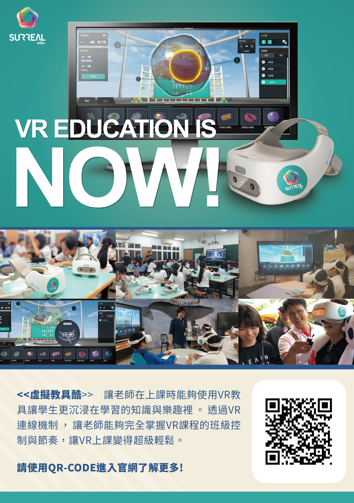
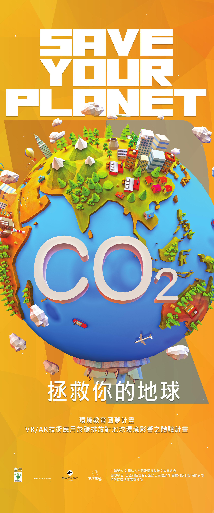
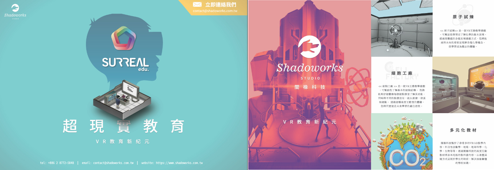
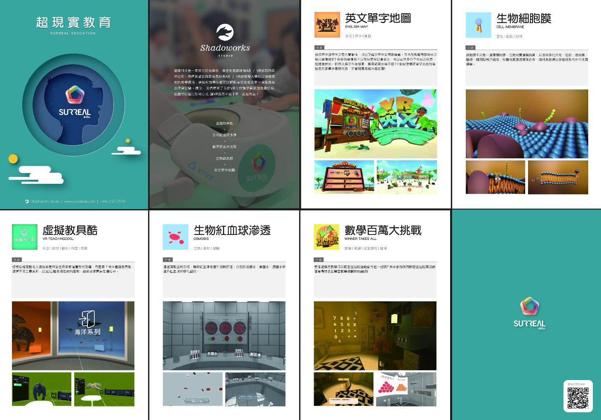
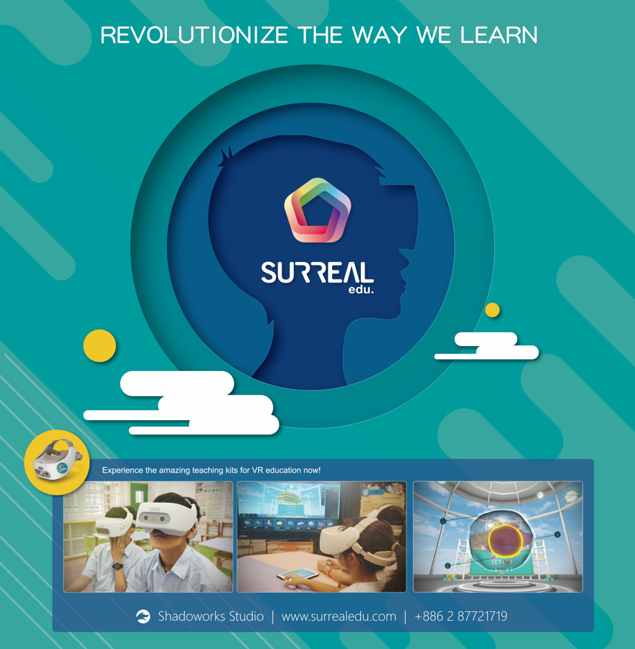
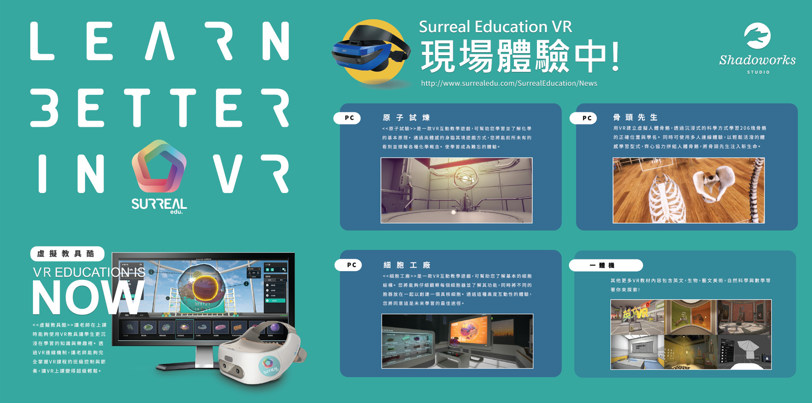
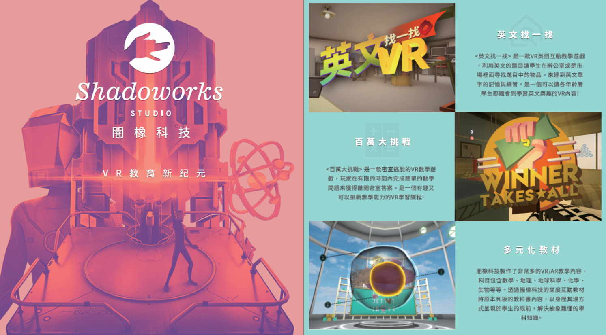
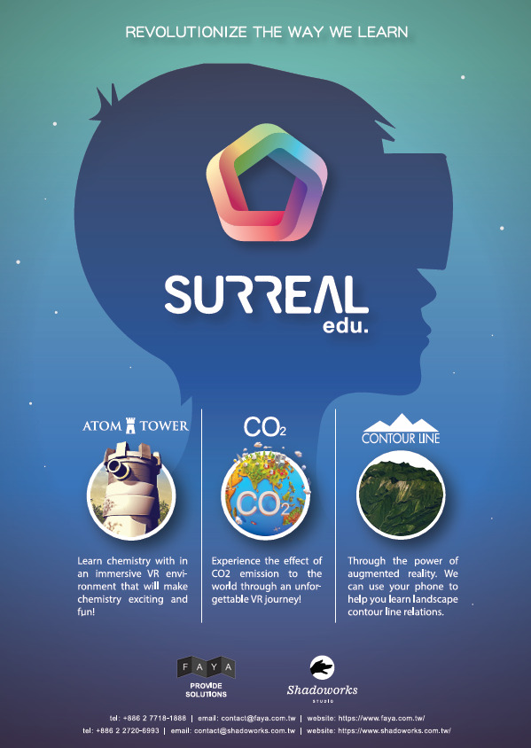
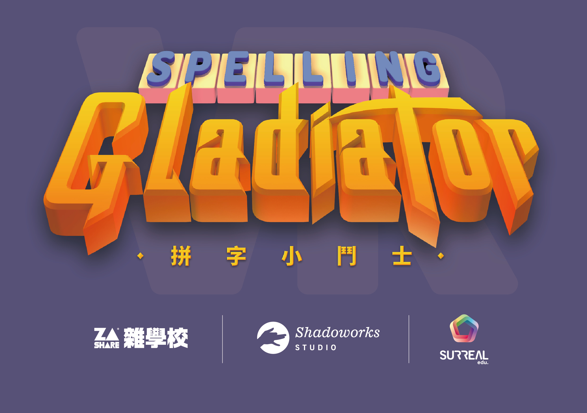
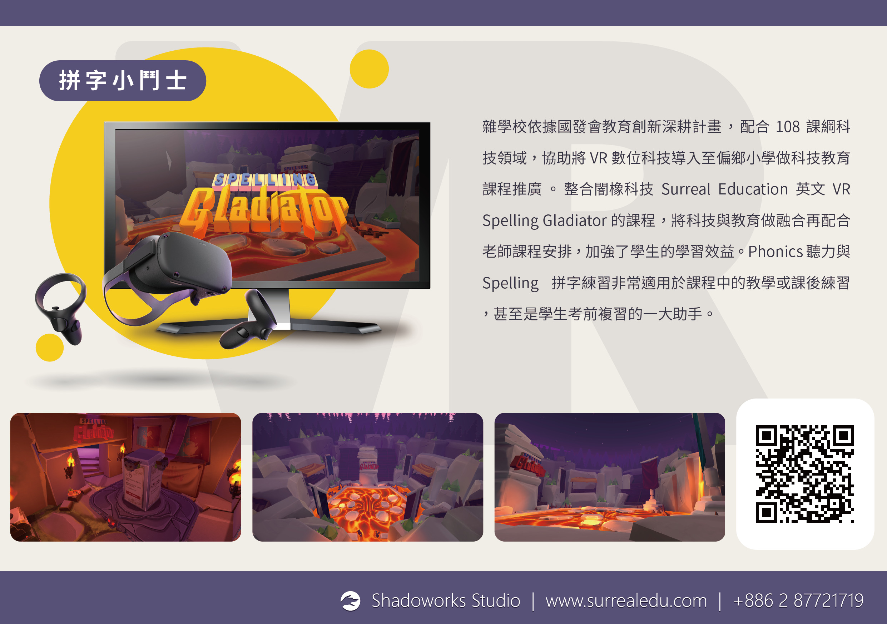
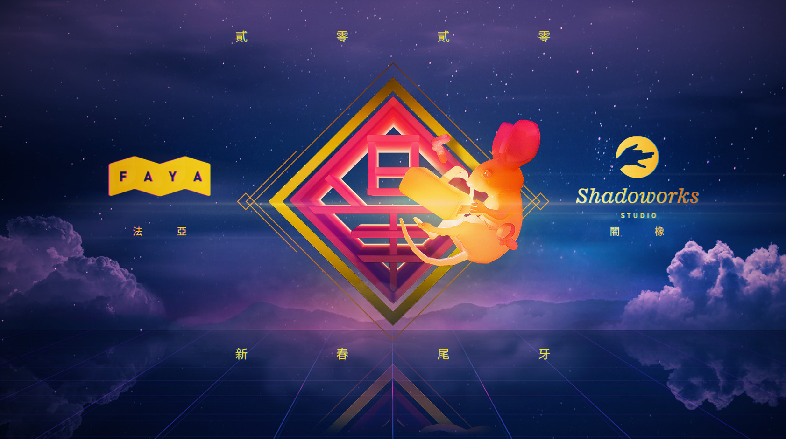
Some photos from the events/exhibitions.
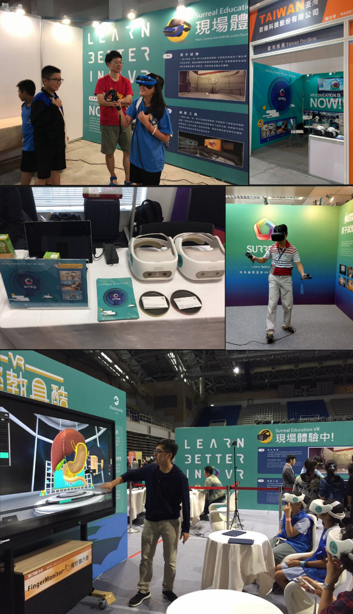
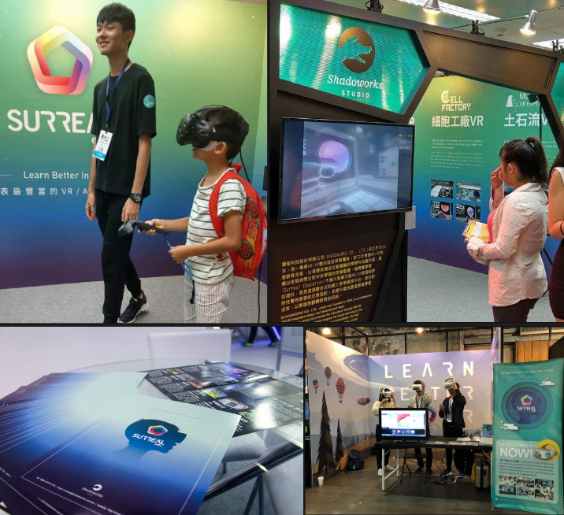
Project Details
Role: Art Director, Supervisor
Type: Design / Prints
Year: 2016 - 2019
Studio: Shadoworks Studio
Tools & Tech: Adobe Creative Suite